Нажми на изображение для исходного файла. Автор ведёт к исходному посту. Два повтора учтены в manifest; ссылка Jesse ведёт только на профиль.
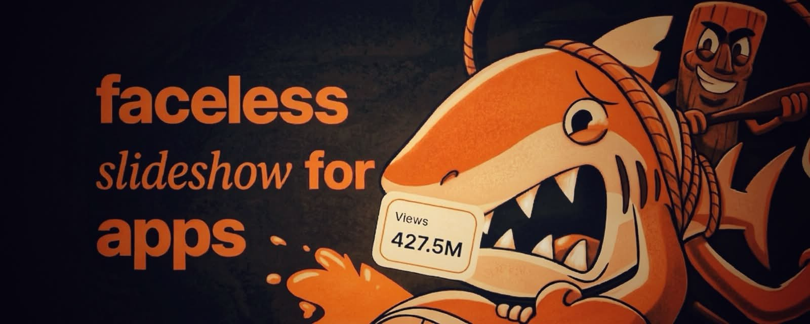
How To ACTUALLY Scale Your App With TikTok Slideshows...
How Brands Are Scaling with Organic Content…
how we ACTUALLY put your favorite brands on everyone's fyp...
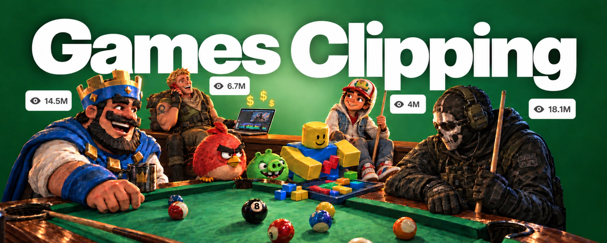
How to get 100M views for your game with just $10,000
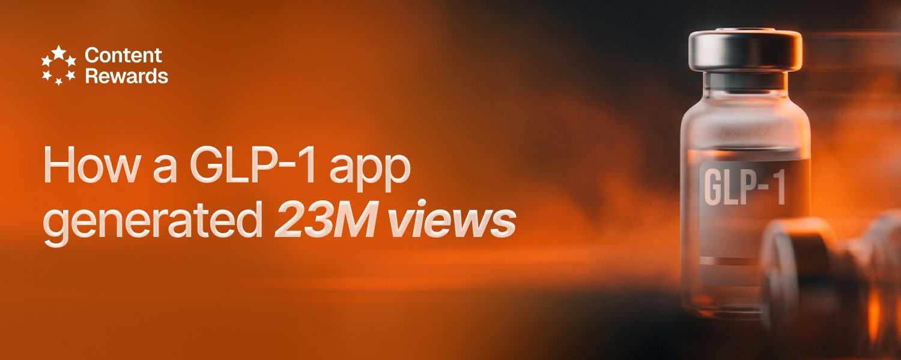
How this GLP-1 app generated 20m+ views

How to scale an app to six figures MRR with organic distribution
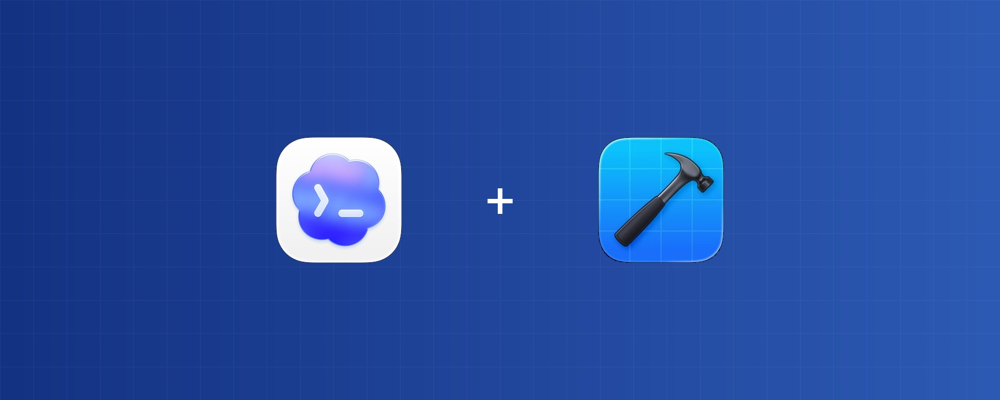
Install These Skills Before Codex Touches Your Xcode Project
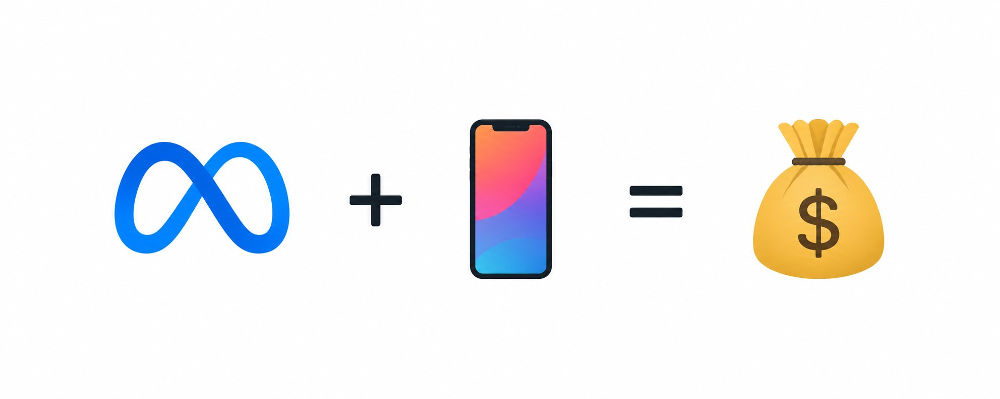
How I scaled two apps to $240,000/yr with paid ads
How I Create AI UGC Slideshows That Got +26.4M views/week Using GPT-6
This is how to get 100M views to your app with TikTok UGC
How to run your first AI UGC campaign (step-by-step guide)

how to get unlimited organic sales (CPA-model clipping)
How to master Jev (Full Guide)
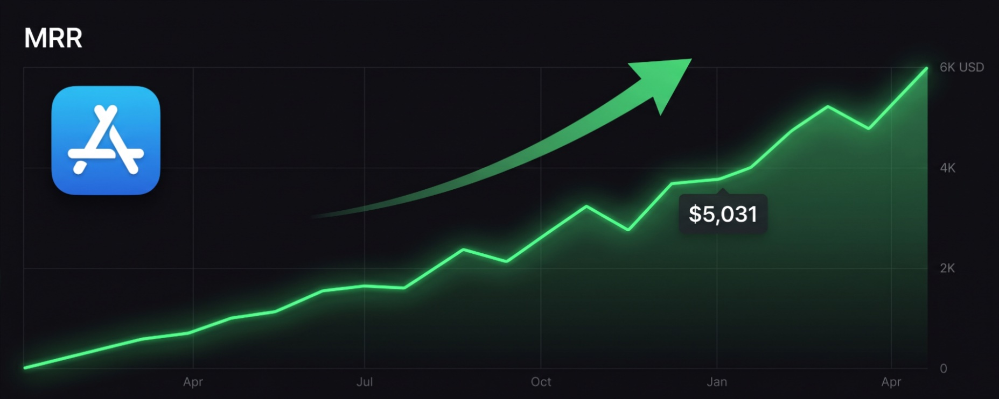
$250 to $5K MRR: 5 App Store Packaging Rules That Actually Work

How to fix your entire life in 1 day
How to become disgustingly self-disciplined

The Skill Quietly Minting The First Solo Millionaires Of The AI Era
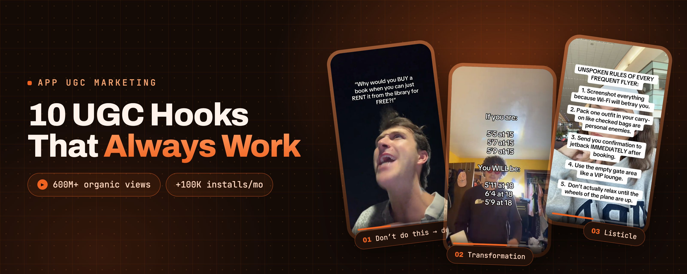
10 UGC Hooks That Always Work (App Marketing)

Over 2 million apps on the App Store in 2025. How do you get people to download yours?

How to build a $2M video production pipeline
How I cracked organic marketing (11.5M views solo)
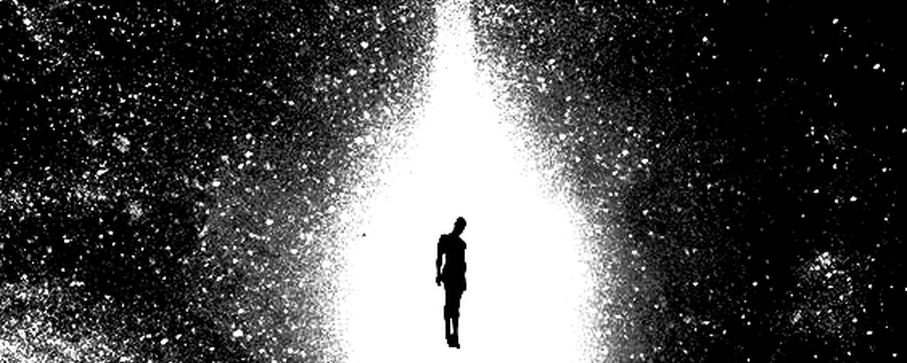
Your Entire Life Changes When You Realize Getting Rich Is A Skill Issue
how to predict v*rality
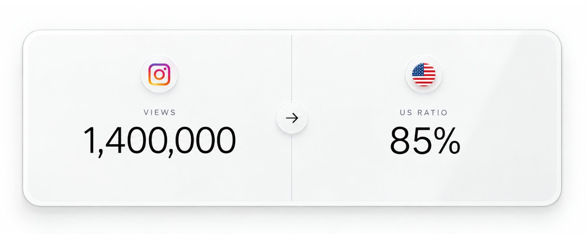
How I reached +1.4M views with an 85% US audience on Instagram in 3 days
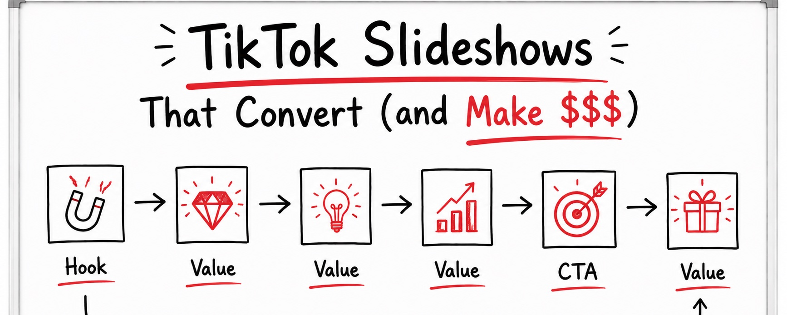
How To Make Highly Converting TikTok Slideshows For Your App ( EASY MODE)
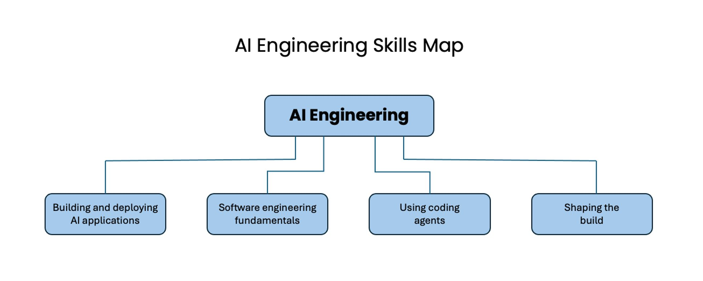
The AI Engineering Skills Map
I built 10 apps in 10 months and make $800,000/yr ( full guide )
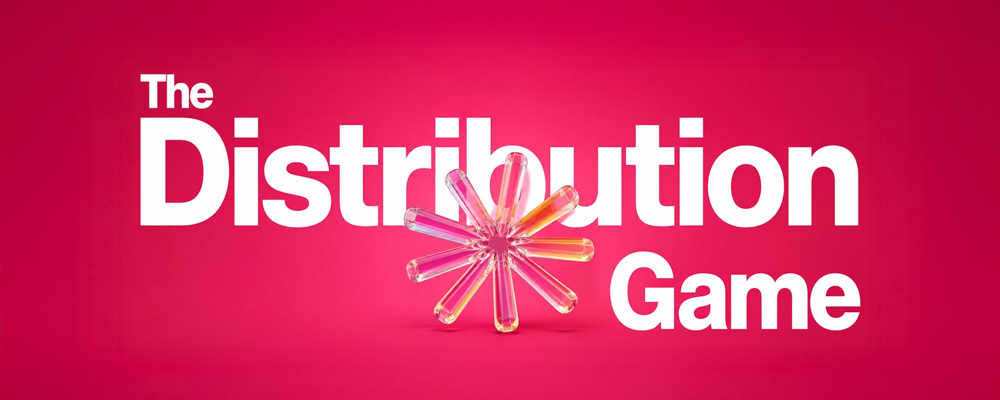
Postiz crossed $2M ARR while everybody says SaaS is dead (Step-by-Step to replicate) 💰